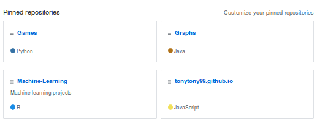

A demonstration of the alpha-beta pruning algorithm applied to the game of nim.
Here are some projects I've worked on in my free time.
| Nim (Playable) |
|---|
|
A demonstration of the alpha-beta pruning algorithm applied to the game of nim. |
| Integer Programming (Interactive) |
|---|

An interactive app I made using shiny in R. Given constraints on available ingredients, you can tweak the recipes of food products and see how it effects the optimum ratio in which they should be made. The maximum possible profit is calculated using the lpSolve library. |
| Monty Hall Problem (Playable) |
|---|

A demonstration of the surprising nature of the Monty Hall problem. Play the game and watch as switching doors is proven to be the better strategy. Alternately you can simulate many games with each strategy. |
| Reinforcement Learning |
|---|

Using reinforcement learning to teach an agent to navigate a scrolling obstacle course. The image above shows many paths taken by the agent to navigate the obstacle course as it learns the best action for different states. This project was inspired by the Flappy Bird game. This project is best viewed in R studio. |
| All Other Projects |
|---|
|

All of my projects on GitHub. |